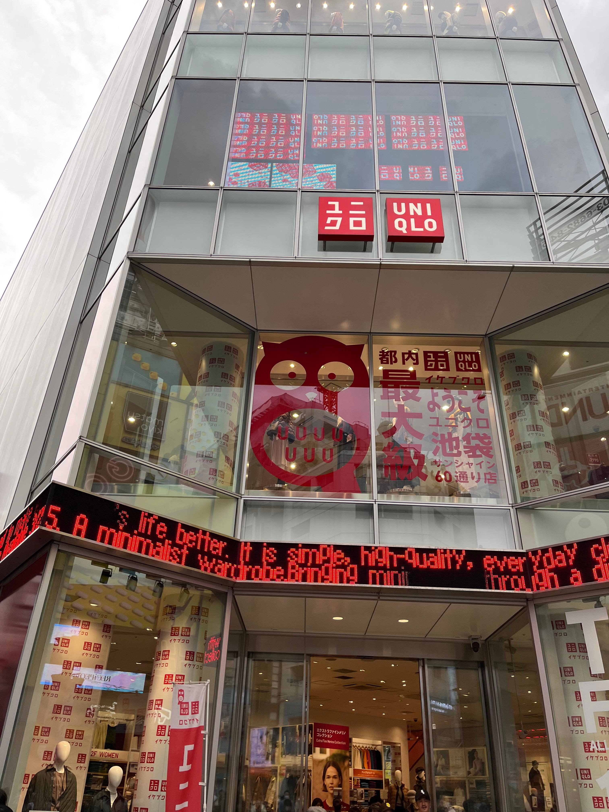

看板 ロゴ
駅の待合室

秋田駅の五能線の待合室です。
こちらは私が8月に実家に帰省する途中で撮影したものです。
五能線区間で運行しているリゾート列車の「リゾート白神」
という列車の中の、「くまげら」の車体をイメージした待合室です。
秋田駅はリゾート白神の始発駅でもあり、新幹線の駅とも直通しているため
リゾート白神に乗車する観光客が多い駅です。
そのため、リゾート白神をイメージした待合室が出来たと考えられます。
私は普段、秋田方面から帰省することがないので、
この待合室は初めてみました。
実物はもっと可愛かったです。ぜひ皆さんも行ってみて下さい！
食べ物屋 セイリング


こちらは私の実家の「食べ物屋セイリング」です。
一枚目の真ん中にある、緑色の雨除けに描かれているのが
食べ物屋セイリングのロゴです。
深浦町では雪人参というとても甘い人参が有名で
その人参を使ったビーフシチューを提供しているため、
緑色とオレンジの配色になっています。
また、店名でもある「セイリング」とも合わせて
スクリュー型の形をしています。
二枚目の写真は、そのビーフシチューを店外で販売する際に使用しているものです。
元々のデザインは緑色にオレンジですが、
注目度を高めるために、オレンジを全面に押し出した色使いをしています。
ユニクロ＆いけふくろう

こちらは、池袋にあるユニクロサンシャインシティ店の入口です。
ユニクロの店舗の中でも最大規模を誇る店舗だそうです。
この店舗の入り口には、池袋といえばという
「いけふくろう」
が大きく描かれています。
これによって、池袋の象徴的な店舗だとすぐにわかります。
実際、遠くからでも、とても目立っています。